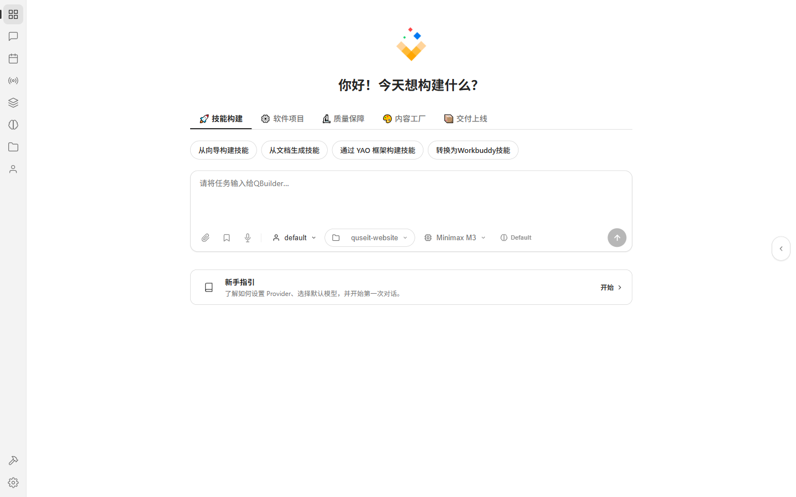
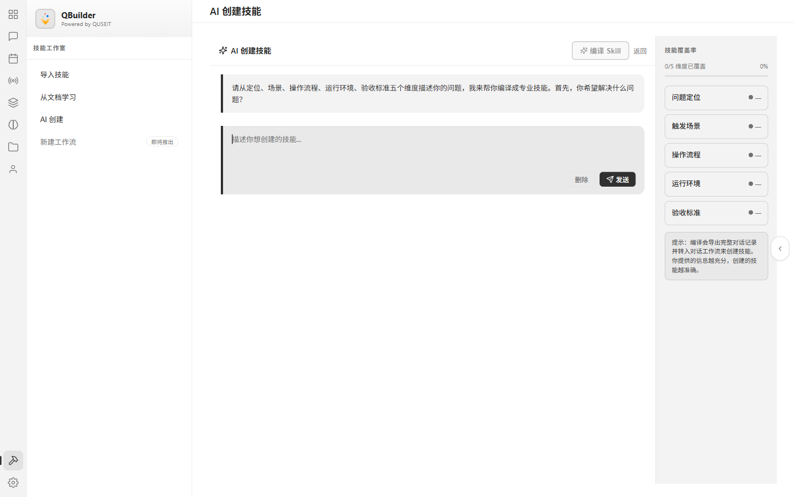
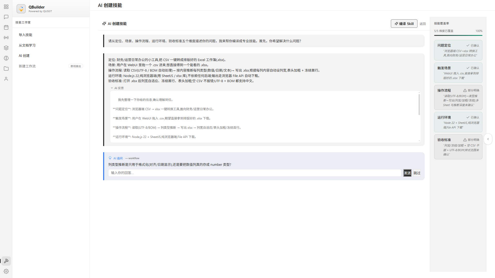
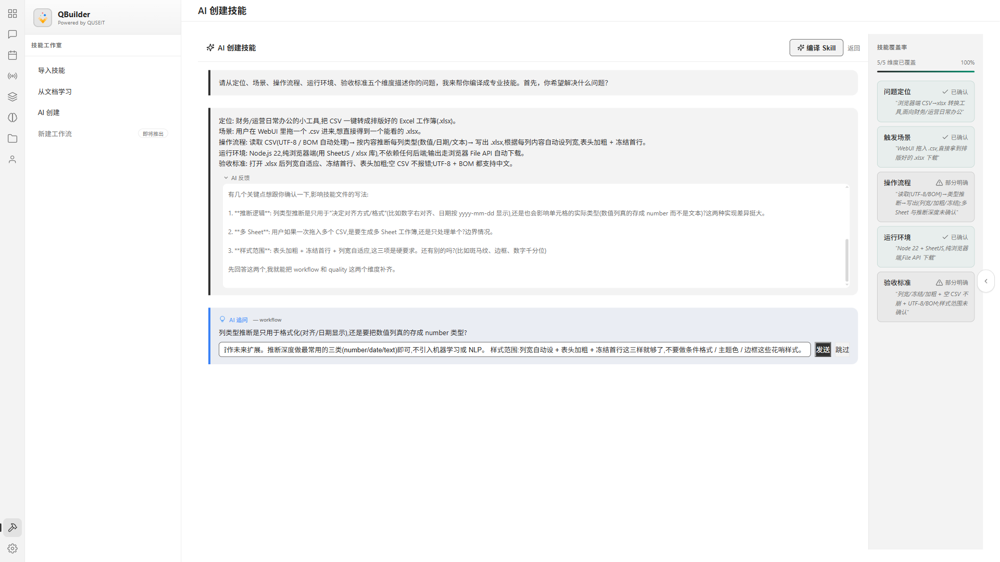
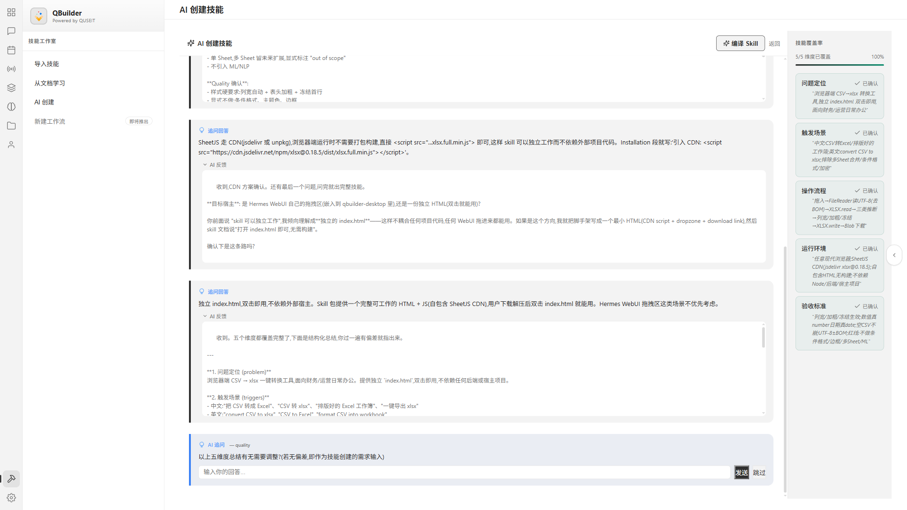
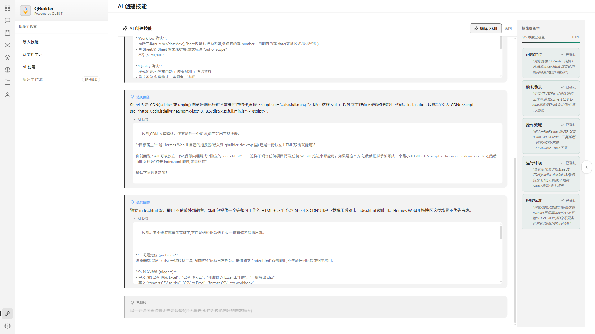
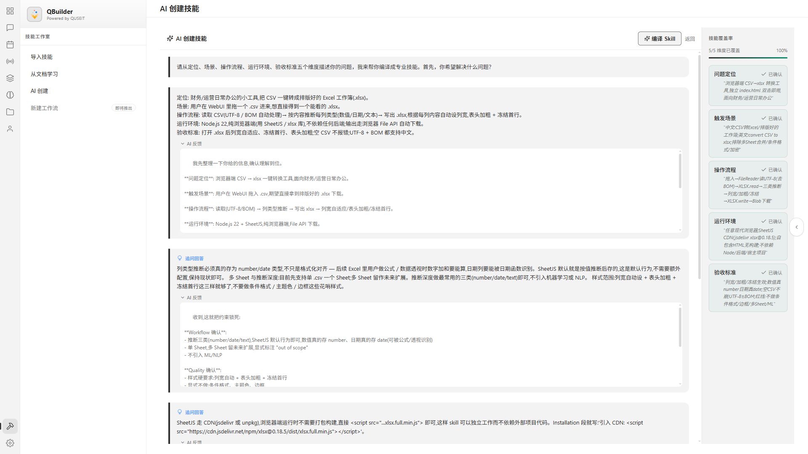
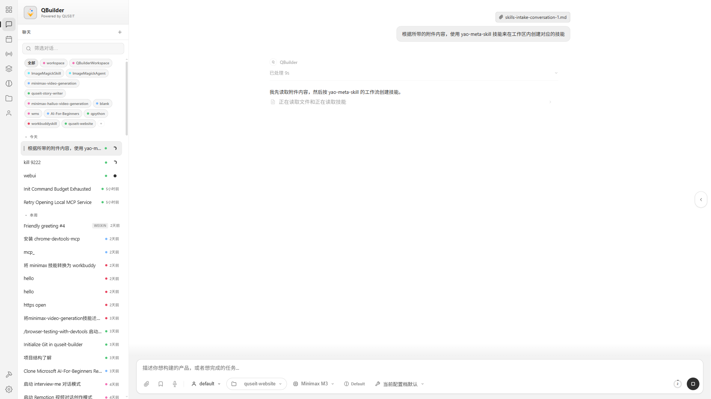
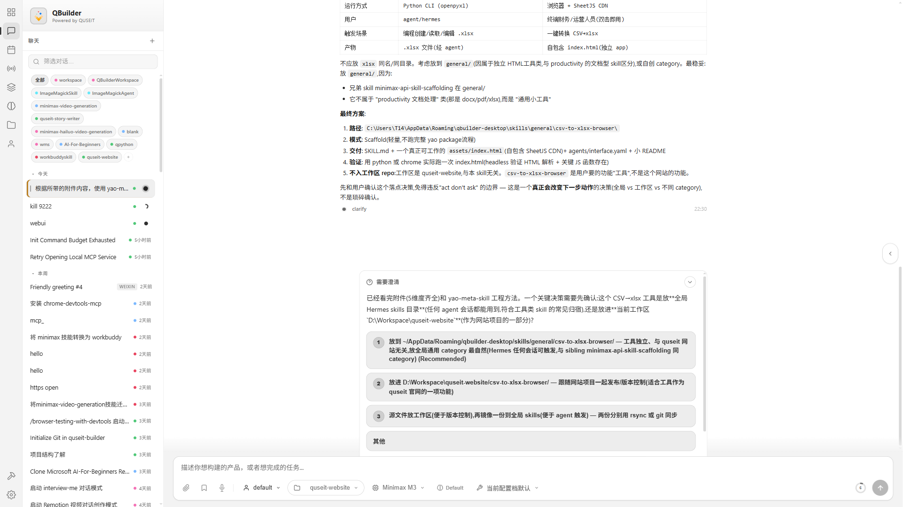
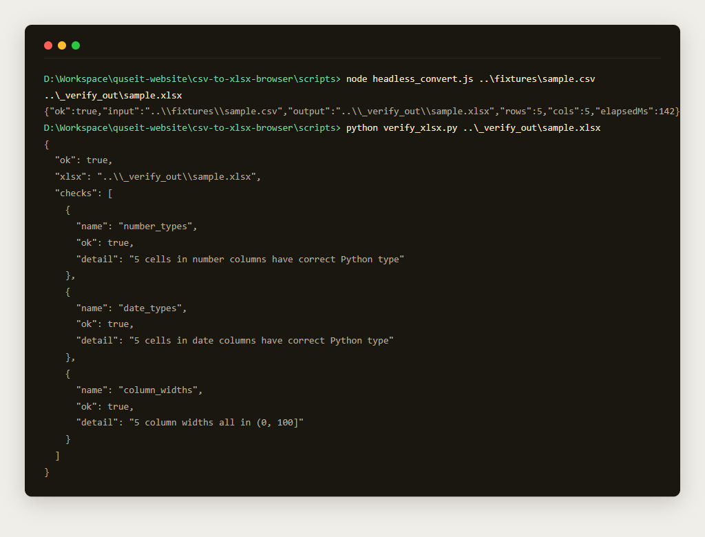

5 分钟创建你的第一个智能体
手把手带你跑完:开启网关 → 在 Skill Studio 通过持续问答完成 5 维度评估 → 把需求交给 yao-meta-skill 生成最终技能。
流程一览
整个过程分三大段:
- 第 0 步:本地开启 QBuilder 网关(技能构建依赖它)。
- 第 1–4 步:在
Skill Studio → AI 创建技能里跟 AI 多轮对话,完成定位 / 场景 / 操作流程 / 运行环境 / 验收标准五个维度的评估。右侧覆盖率面板实时跟踪。 - 第 5–6 步:点击 编译 Skill,AI 把问答整理成一份需求文档,然后交给
yao-meta-skill在你的 workspace 里写出SKILL.md+ 可执行脚本 + 测试用例。
关键观察:即使 Desktop UI 偶尔弹出"agent not responding"提示,后端网关仍可能在跑。你只要在文件系统里看到 csv-to-xlsx-browser/SKILL.md(或你命名的技能目录)被生成,就说明 yao-meta-skill 跑通了。
第 0 步 · 开启 QBuilder 网关
启动本地网关
~30 秒QBuilder Desktop 与 yao-meta-skill 都跑在本地网关上。网关没起来,后面所有 Desktop 交互都会"调用失败"或者停留在 loading。
启动方式
从桌面快捷方式 / 开始菜单启动 QBuilder。桌面上的快捷方式图标是 QBuilder logo 那个橙红色方块。
如果看不到登录界面
- 看任务栏 / 系统托盘有没有 QBuilder 图标在闪烁 — 启动中。
- 等 10–15 秒,首次启动比较慢。
- 仍不行就右键托盘图标 →
退出→ 再启动一次。
第 1 步 · 进入 Skill Studio
登录 → Dashboard → 从向导构建技能
~1 分钟1.1 启动 QBuilder Desktop
启动 QBuilder Desktop → 登录页填邮箱密码(或者第三方登录) → 进入 Dashboard。
1.2 找到 "从向导构建技能" 卡片
Dashboard 上半区有一组工作流卡片,第一张就是 从向导构建技能(workflow id: workflow-1-1)。

1.3 点击卡片,进入 AI 创建技能
系统会自动跳到 Skill Studio 面板,左侧 "我的技能 / 商店 / 导入技能 / 从文档学习 / AI 创建" 那一列中 AI 创建 被高亮选中。

第 2 步 · 回答 AI 的第一问(填 5 个维度)
把你的想法按 5 维度描述清楚
~3 分钟(你打字) + ~30 秒(AI 响应)2.1 AI 抛出的第一问
进入 AI 创建后,系统立刻开始多轮对话,第一问是:
请从定位、场景、操作流程、运行环境、验收标准五个维度描述你的问题,我来帮你编译成专业技能。首先,你希望解决什么问题?
2.2 一次性把 5 维写满(降低轮次)
你不需要等 AI 一个一个问。把下面 5 个维度一次写满,后面 AI 只需要少量追问确认,效率最高。
| 维度 | 回答什么 |
|---|---|
| 定位 | 这个技能为谁服务,解决哪类问题 |
| 场景 | 用户在什么具体情境下会用到它 |
| 操作流程 | 从输入到输出的步骤,越具体越好 |
| 运行环境 | 依赖什么语言 / 框架 / 库 / 部署方式 |
| 验收标准 | 用户怎么判断"成功了" |
2.3 提交回答,等 AI 流式响应
写完点文本框右下角的 发送 按钮(或者回车)。AI 会先复述一遍你的需求、确认理解,然后开始右侧覆盖率面板的更新。

第 3 步 · 回答 followup 追问
3 答 1 跳,把追问清光
~3 分钟覆盖率到 100% 之后,AI 还会问几个 followup 来消除歧义。本教程实测有 4 个:
- 列类型推断是只用于格式化(对齐/日期显示),还是要把数值列真的存成 number 类型?
- SheetJS 走 CDN 还是 npm 本地打包?
- 目标是独立 index.html(双击即用),还是嵌入到 Hermes Desktop 拖拽区?
- 以上五维度总结有无需要调整?(若无偏差,即作为技能创建的需求输入)

每个追问的两种处理
- 点 "发送":你给具体回答(2–4 句最合适)。AI 会更新覆盖率摘要。
- 点 "跳过":你不想回答,默认按 AI 当前的合理理解继续。
如果对追问没什么特别想法,通常 3 答 + 1 跳(对最终确认那个 meta 问)是最快的节奏。


第 4 步 · 点击 "编译 Skill"
让 AI 把问答整理成需求文档
~5–30 秒所有追问都答完(或跳过)后,右上角的 编译 Skill 按钮会从 disabled 变 enabled。点击它,AI 会做两件事:
- 把你这一路的所有问答 + 追问整理成一份 markdown 需求文档。
- 把这个文档塞进 yao-meta-skill 的输入,跳转到新 session 让 yao-meta-skill 接手。


第 5 步 · 等 yao-meta-skill 把技能写到 workspace
监控 handoff session + 关注文件系统变化
~30 秒–3 分钟handoff session 会启动 yao-meta-skill 来在你的 workspace 里创建技能。不要看 UI 是不是还显示 "agent not responding" banner——这个 banner 是 Desktop UI 心跳机制的误报,后端大概率仍在跑。
看文件系统最快
在你的 workspace 根目录(例如 D:\Workspace\quseit-website\)下,刷新一下文件管理器:
D:\Workspace\quseit-website\> dir
...
<新建目录> csv-to-xlsx-browser\
...看到 csv-to-xlsx-browser\(或你自己命名的目录)出现,就说明 yao-meta-skill 在落盘了。
yao-meta-skill 产出的标准结构
csv-to-xlsx-browser/
├── SKILL.md 触发词 + 红线 + 诚实边界
├── manifest.json 结构化元数据
├── README.md quick start + 排除项
├── agents/
│ └── interface.yaml agent 接口
├── assets/ 用户最终消费的产物(独立 index.html 等)
├── fixtures/ 测试 CSV / 测试样本
├── reports/ 意图置信度报告
└── scripts/ 工具脚本 + node_modules(真实依赖)
├── headless_convert.js
└── verify_xlsx.py
第 6 步 · 验证产物
跑 fixtures 端到端检查
~30 秒yao-meta-skill 通常会同时产出可执行的验证脚本。在 scripts/ 目录下找到 headless_convert.js(或类似名)和 verify_xlsx.py(或类似名),跑一遍:
cd csv-to-xlsx-browser\scripts
npm install # 装 SheetJS 等依赖
node headless_convert.js ..\fixtures\sample.csv ..\_verify_out\sample.xlsx
python verify_xlsx.py ..\_verify_out\sample.xlsx
# 预期输出:
{
"ok": true,
"checks": [
{ "name": "number_types", "ok": true, "detail": "5 cells in number columns have correct Python type" },
{ "name": "date_types", "ok": true, "detail": "5 cells in date columns have correct Python type" },
{ "name": "column_widths","ok": true, "detail": "5 column widths all in (0, 100]" }
]
}所有 "ok": true 就是产物合格。

最终结果
走完这 6 步,你已经在 workspace 里得到一个:
- 包含完整 SKILL.md(含触发词 + 红线 + 诚实边界)
- 包含可执行 scripts/(含真实 npm 依赖 + Python 校验)
- 覆盖边界场景的 fixtures/
- 面向用户/开发者的 README.md
它的能力会被 QBuilder 全局识别,以后你可以直接用日常语言("把这份 CSV 转成 xlsx")触发它。
常见踩坑
- Desktop banner 报 "agent not responding": 这是 Desktop 心跳检测的误报,后端还在跑。看文件系统是不是有新目录出现比看 banner 重要。
- 想修改之前的回答: 对话里没有"上一步"按钮,只能点 cell 旁边的删除按钮删掉,或重新打开 Skill Studio 走一遍。
- 想跳过 followup 但页面没动: 确认你点的是追问 cell 旁边的"跳过",而不是覆盖率面板里的项目。